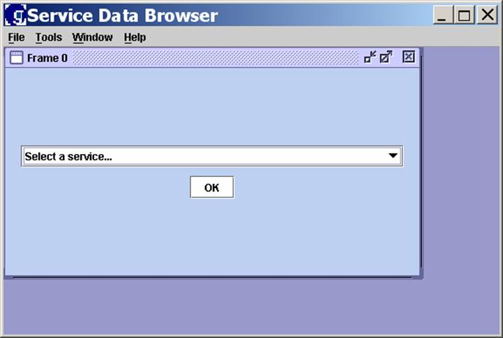
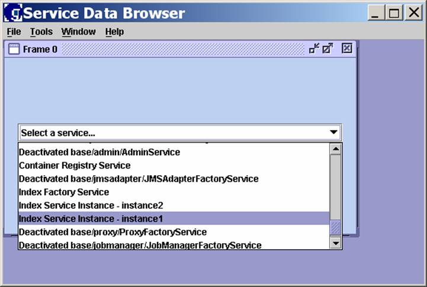
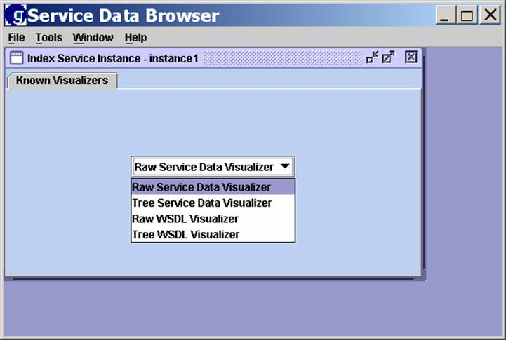
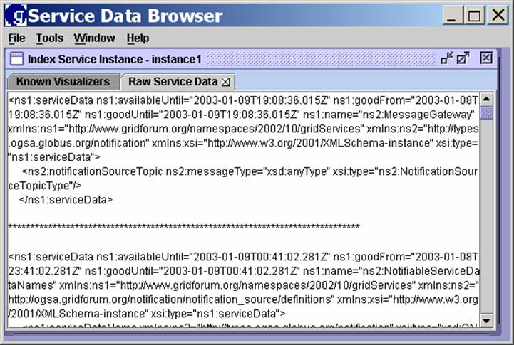
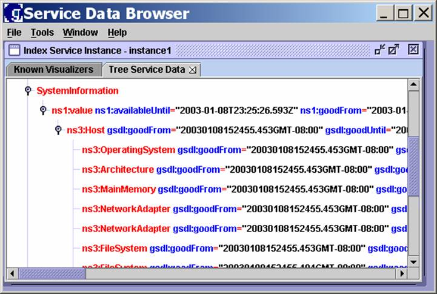
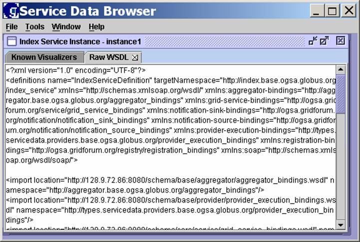
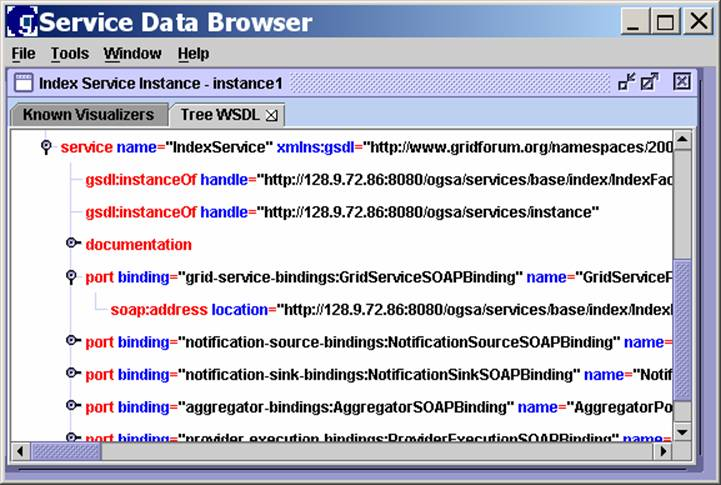

This document is intended to give you a quick introduction to the Service Data Browser, which is the graphical user interface to service data within the Globus Toolkit® Version 3.0. The Service Data Browser allows you to view the details of the Grid services available to you from a Registry configured by your administrator. Service data can be viewed in various formats, depending on your requirements.
This document assumes that the Globus Toolkit 3.0 has been installed and configured for your particular computing environment, and that the Service Data Browser has been appropriately configured as well, as described in GT3 Service Data Browser Configuration.
All Grid services expose service data. The Open Grid Services Architecture (OGSA) standard protocol and standard service data interface used by the Browser make it easy to display the service data and Web Services Description Language (WSDL) of any Grid service.
When the Browser starts, and periodically through subscription/notification, it obtains a list of existing services from the Registry. The Browser allows the user to bind any frame to the service data of any known service.
To start the Service Data Browser, enter the following command at the system prompt from within the bin directory in your GT3 installation directory:
globus-sdb
This starts the Service Data Browser and connects to the Registry specified in the Service Data Browser configuration file (globus-sdb.conf, described in GT3 Service Data Browser Configuration).
The Service Data Browser window then opens as follows:

The initial service list displayed inside the Browser frame (and any ensuing frames you might open from New Frame on the File menu) allows you to select any of the Grid services located in the configured Registry service. When you select a service from a frame, you are connecting the frame to that service. Once a frame is connected to a service instance, the name of the frame will change to reflect that service.
Once you open the Service Data Browser, you can use it for the following functions:
Select a service from the Registry.
Select and use an existing Visualizer to display service data in various views.
The remainder of this document describes and illustrates these functions in detail.
The “Select a service…” pull-down menu in a Browser frame displays all of the Grid services available to you from the configured Registry. For this example, we will be working with an Index Service instance called “instance1,” which shows system information. Scroll down in the “Select a service…” menu and select “Index Service Instance – instance1,” as follows:

After you select “Index Service Instance – instance1” in the Browser frame, click on OK and the following window appears. You can select a Visualizer from the pull-down menu.

A Visualizer uses an open API that allows you to display service data in any desired way, such as graphically as the data changes. The Visualizer determines the type, amount, and format of the data displayed. The Known Visualizers menu allows you to choose a defined Visualizer to view the service.
The Service Data Browser provides four default Visualizers:
Raw Service Data
Tree Service Data
Raw WSDL
Tree WSDL
All of these Visualizers are generic; that is, they will work for all services. As described in GT3 Service Data Browser Configuration, you can create and add your own Visualizers for specific service data.
The default Visualizers in the pull-down menu are described in the following sections.
Select the Raw Service Data Visualizer from the Known Visualizers pull-down menu and click on OK. A new tab appears in the service frame, which contains the Raw Service Data as follows:

This raw data view provides all of the XML details for the selected service instance. This data can be used as desired for developing other Visualizers.
To keep this view available and return to the Known Visualizers menu, click on the Known Visualizers tab. To close this view and return to the Known Visualizers menu, click on the “x” at the right of the Raw Service Data tab.
The Tree Service Data Visualizer displays the data in a hierarchical representation that can be expanded or collapsed. This Visualizer displays only the name on the top level of the service data.
Select the Tree Service Data Visualizer from the Known Visualizers pull-down menu and click on OK. A new tab appears in the service frame, which contains the Tree Service Data. The following is the tree data view of our “instance1” example, with some of the items expanded:

Note that the “instance1” service instance for this example was created to use an information provider program called “SystemInformation,” which returns system configuration details. This information is visible in the Tree Service Data view above.
To keep this view available and return to the Known Visualizers menu, click on the Known Visualizers tab. To close this view and return to the Known Visualizers menu, click on the “x” at the right of the Tree Service Data tab.
The Raw WSDL Visualizer displays the WSDL of the selected service instance – definitions, bindings, port types, handles, and so forth. This data can be used by other programs (like a GT3 component or any user-developed software) to access the functions of this service instance.
Select the Raw WSDL Visualizer from the Known Visualizers pull-down menu and click on OK. A new tab appears in the service frame, which contains the raw WSDL data. The following is the raw WSDL view of our “instance1” example:

To keep this view available and return to the Known Visualizers menu, click on the Known Visualizers tab. To close this view and return to the Known Visualizers menu, click on the “x” at the right of the Raw WSDL tab.
The Tree WSDL Visualizer displays a hierarchical representation of the raw WSDL data. The view can be expanded or collapsed by clicking on the items in the tree.
Select the Tree WSDL Visualizer from the Known Visualizers pull-down menu and click on OK. A new tab appears in the service frame, which contains the tree WSDL data. The following is the tree WSDL view of our “instance1” example, with some of the items expanded:

To keep this view available and return to the Known Visualizers menu, click on the Known Visualizers tab. To close this view and return to the Known Visualizers menu, click on the “x” at the right of the Tree WSDL tab.
You can add a Visualizer to the Service Data Browser as follows:
Either obtain an existing Visualizer and add it to the Browser, or
Create a new Visualizer for your specific service data and the way in which you want it displayed, and then add it to the Browser.
Adding a Visualizer is described in more detail in GT3 Service Data Browser Configuration.
The Service Data Browser allows you to vary the appearance and display order of your frames.
To change appearance, select Set Look And Feel from the Tools menu. This gives you three appearance options: Windows, Metal, and Motif. Metal is the option used for the examples in this document and is the default.
To change the arrangement of the frames on the screen, select one of the options on the Windows menu: Tile Horizontally, Tile Vertically, or Cascade.
To see the version of the Service Data Browser, select About from the Help menu.
When you have completed your Browser session, click on Exit from the File menu. This closes the Browser.
This page contains links to additional GT3 user and developer documentation, as well as to technical reference documents.
The GT3 Admin Guide presents installation and configuration information.
Additional documents of interest for GT3 Information Services are as follows: